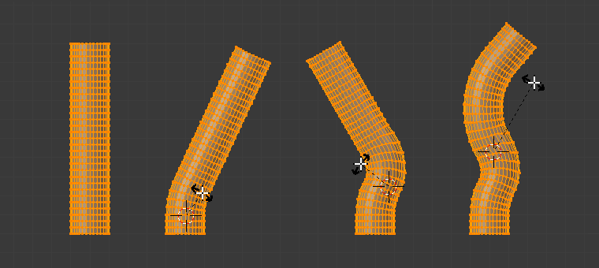

弯曲¶
参考
- 模式
物体和编辑模式
- 菜单
- 快捷键
Shift-W

弯曲前。¶ |

开启钳制。¶ |

关闭钳制。¶ |
该工具通过旋转一长条选中元素，形成鼠标指针和3D游标之间的弧形。
用法¶
弯曲 工具用于将形状弯曲为两端之间逐渐过渡的情况。
这可能需要稍作适应，控制的基础原理如下:
指针和游标的初始位置决定了旋转的轴线。
鼠标指针到3D游标的距离控制弯曲的锐利程度。
鼠标指针与初始轴线的相对相对角度决定弯曲角度。
如果这过于复杂，最好亲自尝试一下，这样很快就能弄清楚该工具对输入的反应。
- 弯曲角度
旋转量。
- 半径
弯曲的锐利程度。
- 钳制
通常弧形会在选中元素超出切线的角度停止(见上文左图)。当关闭钳制后，弧线会继续绕圆周变形。
当 Alt 关闭钳制后，所有选中元素沿圆周变形，即使是超出3D游标和鼠标之间的部分。
Note
与其他变换模式不同，弯曲 不受 轴心点 或 变换坐标系 影响，总是在视图平面上变形。
Hint
可以通过多次弯曲的旋转，形成螺旋形状。

弯曲变换范例。¶